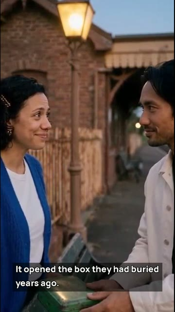
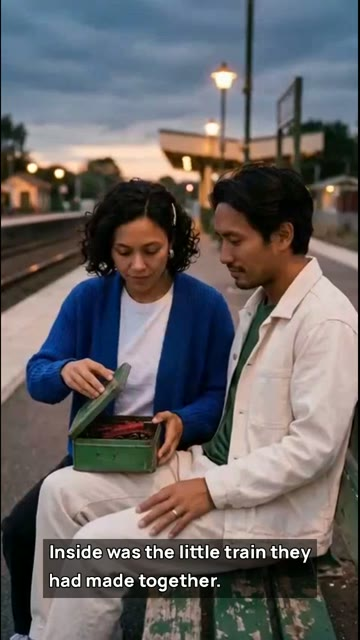

One-minute AI mystery
The Last Key
Maya thinks she missed the last train. Then a stranger holds out a key identical to hers.
Chapters
Review the cut
Compare the two frames around the chapter break. Then use the worksheet to check how a prop carries the action across a cut in your own scene.
Show the frames around 0:30 (spoiler)

They stand with the green box closed.

They sit. Maya opens the same box.
The camera angle and their poses change. The box and wardrobe carry the scene across the cut.
Plan a scene with the same cast
Use Maya and Nico’s editable sheets to plan two connected shots. Keep the bench and their wardrobe in place. Change one action across the cut, from setting down a closed box to opening it.
The original 480p-class Seedance 2.5 shots were assembled at 720 × 1280 in two chapters, then joined here with their original narration and picture frames. Generation is separate from free planning. Review your Studio quote and availability before buying credits.
Watch the original chapter playlist on YouTube
Read the narration transcript
- Maya thought she had missed the last train.
- Then a stranger showed her exactly the same key.
- It opened the box they had buried years ago.
- Inside was the little train they had made together.
- He had not come back for the station.
- He had come back for her.